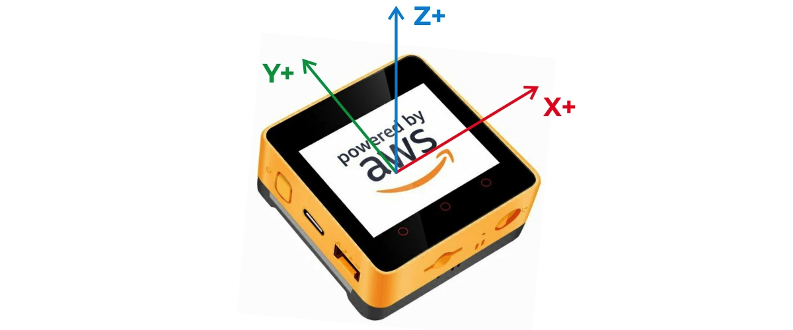
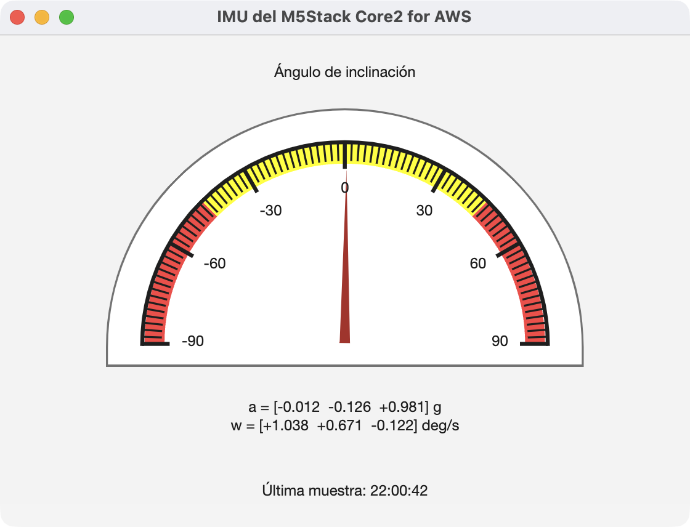

Tutorial
Lectura de la IMU del M5Stack Core2 for AWS
Adquiere aceleraciones y velocidades angulares con PlatformIO/Arduino y actualiza un Gauge desde una aplicación MATLAB orientada a objetos.
En este tutorial programaremos el M5Stack Core2 for AWS desde Visual Studio Code con PlatformIO. El dispositivo leerá su unidad de medición inercial y enviará cada segundo las tres componentes de aceleración y las tres componentes de velocidad angular. MATLAB recibirá cada trama mediante un evento, ejecutará un callback y actualizará un control Gauge sin utilizar un ciclo de consulta continua.
Introducción
El M5Stack Core2 for AWS integra un microcontrolador ESP32, una pantalla táctil y una unidad de medición
inercial, o IMU. Esta última combina un acelerómetro y un giroscopio de tres ejes. El acelerómetro mide
las componentes ax, ay y az, mientras que el giroscopio
proporciona las velocidades angulares gx, gy y gz.

La aplicación dividirá el trabajo de manera natural. El ESP32 se encargará de acceder al sensor y respetar el periodo de muestreo. MATLAB interpretará los datos y actualizará la interfaz gráfica.
Cada segundo, el M5Stack enviará una línea con el formato siguiente:
Una trama real puede verse así:
Los tres primeros valores se expresan en unidades de gravedad, mientras que los tres últimos corresponden a grados por segundo.
La magnitud que mostrará el Gauge
Un Gauge representa una sola magnitud escalar. Para aprovechar las tres componentes del acelerómetro, mostraremos el ángulo de inclinación o “pitch”:
Esta expresión estima la orientación respecto a la gravedad y produce un ángulo entre \(-90^\circ\) y \(90^\circ\). Funciona bien cuando el dispositivo está quieto o se mueve lentamente; durante movimientos rápidos, el acelerómetro también detecta aceleraciones distintas de la gravedad y el resultado deja de representar únicamente la orientación.

Preparación de Visual Studio Code y PlatformIO
Para realizar la práctica se necesita el M5Stack Core2 for AWS, un cable USB-C con transmisión de datos,
Visual Studio Code con la extensión PlatformIO IDE y MATLAB con soporte para el objeto
serialport.
En la página principal de PlatformIO, selecciona New Project y utiliza esta configuración:
- Name:
M5Stack_IMU. - Board:
M5Stack Core2. - Framework:
Arduino.
PlatformIO identifica la tarjeta mediante m5stack-core2. Esta definición es adecuada para el
Core2 for AWS porque su unidad principal utiliza el hardware del Core2. La biblioteca M5Unified detecta
la IMU disponible y ofrece una interfaz de alto nivel común para las versiones con MPU6886 y las
revisiones que incorporan BMI270.
Configuración de PlatformIO
Al crear el proyecto aparecerán el archivo platformio.ini y la carpeta src.
Sustituye el contenido de platformio.ini por lo siguiente:
La dependencia M5Unified proporciona una interfaz común para la pantalla, los botones, la alimentación y la IMU. También incorpora la dependencia gráfica M5GFX que necesita la pantalla.
Firmware para leer y transmitir la IMU
Abre src/main.cpp y sustituye su contenido por este programa:
La condición basada en millis() evita bloquear el microcontrolador durante un segundo
completo. La resta entre valores sin signo conserva además un comportamiento correcto cuando se desborda
el contador de millis().
M5.Imu.update() solicita una medición reciente. A continuación,
M5.Imu.getImuData() devuelve una estructura con los vectores accel y
gyro. El programa transmite seis valores con seis cifras decimales y termina cada trama con
\n, es decir, con el carácter LF que MATLAB utilizará como terminador.
Compilación y carga del firmware
Conecta la tarjeta y ejecuta PlatformIO: Upload desde la barra inferior de Visual Studio Code. También puedes hacerlo desde la terminal del proyecto:
Después abre el monitor serial de PlatformIO:
La salida esperada es similar a esta:
Debe aparecer una línea IMU aproximadamente cada segundo. Cierra el monitor antes de abrir
MATLAB, ya que dos programas no pueden utilizar simultáneamente el mismo puerto.
Identificación del puerto en MATLAB
Ejecuta la siguiente instrucción para mostrar los puertos disponibles:
En Windows aparecerá normalmente un nombre como COM7. En macOS puede verse como
/dev/cu.SLAB_USBtoUART, /dev/cu.usbserial-... o
/dev/cu.wchusbserial.... En Linux suele utilizarse /dev/ttyUSB0 o
/dev/ttyACM0.
En macOS conviene elegir el dispositivo /dev/cu.* correspondiente, no el dispositivo
/dev/tty.* del mismo convertidor.
Aplicación MATLAB orientada a objetos
Crea un archivo llamado LeerIMU.m con el código siguiente. Antes de ejecutarlo, sustituye
el valor de portName por el puerto correspondiente a tu equipo:
Guarda el archivo y crea una instancia de la clase:
El constructor abrirá el puerto configurado en portName, creará la interfaz y dejará activo
el callback serial. En Windows puedes usar un nombre como "COM7"; en macOS, uno como
"/dev/cu.SLAB_USBtoUART".
Al inclinar el M5Stack alrededor del eje transversal, la aguja reaccionará cuando llegue la siguiente muestra. Como el periodo es de un segundo, la actualización se verá deliberadamente pausada.

Cómo funciona el callback
La instrucción central es:
MATLAB no consulta periódicamente si llegaron datos. El objeto serialport, almacenado en
app.Port, vigila el flujo de entrada y genera un evento cada vez que encuentra el
terminador LF. La función anónima conserva la referencia a la aplicación y llama al método privado
updateGauge, que realiza cuatro operaciones:
- Lee la línea completa mediante
readline. - Verifica que la trama comience con
IMUy contenga seis valores. - Calcula el ángulo de inclinación.
- Asigna el resultado a
app.Gauge.Valuey actualiza las etiquetas.
La clase hereda de handle, por lo que sus callbacks trabajan sobre la misma instancia. Al
cerrar la ventana se ejecuta delete(app); este método desactiva la recepción asíncrona,
elimina el objeto serial y cierra la interfaz, dejando disponible el puerto.
Cambiar la variable mostrada
Si se desea mostrar directamente la aceleración en el eje x, cambia los límites del Gauge:
Después sustituye:
por:
Para representar gx puede utilizarse, por ejemplo, un intervalo de \([-250,250]\) grados por
segundo. Los límites adecuados dependen del rango del sensor y de la dinámica del experimento.
Problemas frecuentes
- MATLAB indica que el puerto está ocupado. Cierra el monitor serial de PlatformIO y
cualquier otra aplicación que esté usando el dispositivo. Si quedó una conexión anterior en MATLAB,
ejecuta
delete(serialportfind). - No aparece ningún puerto. Comprueba que el cable USB-C sea de datos. Según la revisión de la placa y el sistema operativo, también puede ser necesario instalar el controlador CP210x o CH9102.
- El firmware muestra “IMU no encontrada”. Actualiza M5Unified desde PlatformIO, comprueba que la tarjeta seleccionada sea M5Stack Core2 y reinicia el dispositivo. El Core2 for AWS original utiliza MPU6886, mientras que revisiones recientes pueden incorporar BMI270.
- MATLAB recibe datos incompletos. Verifica que ambos programas utilicen 115200 baudios y que MATLAB tenga configurado LF como terminador. El firmware debe enviar exactamente una trama por línea.
- El ángulo tiene el signo contrario. La orientación de los ejes depende de cómo se
coloque físicamente la tarjeta. Elimina el signo negativo de
-axo invierte el resultado depitch. - El Gauge responde con retraso. En este tutorial el retardo es esperado porque el
firmware transmite una muestra por segundo. Para una visualización más fluida, cambia
SAMPLE_PERIOD_MSa100y trabaja aproximadamente a 10 Hz.
Alcance y posibles mejoras
El sistema demuestra una adquisición dirigida por eventos y evita el sondeo continuo desde MATLAB. Para estudiar movimientos rápidos conviene aumentar la frecuencia, agregar una marca de tiempo generada por el ESP32 y, si es necesario, transmitir bloques de muestras o paquetes binarios.
También puede combinarse el acelerómetro con el giroscopio mediante un filtro complementario o un filtro de Kalman. Esto permite obtener una estimación de orientación más estable que la calculada únicamente a partir de la gravedad.
La arquitectura puede ampliarse para construir registradores de movimiento, interfaces de instrumentación, detectores de caídas, sistemas de monitoreo y prototipos de control en los que el M5Stack funcione como una extensión física de MATLAB.
Bibliografía
- M5Stack. (s. f.). M5Unified: Arduino / ESP-IDF library for M5Stack series [Software]. GitHub. Recuperado el 4 de septiembre de 2026.
- PlatformIO. (s. f.). M5Stack Core2. PlatformIO Documentation. Recuperado el 4 de septiembre de 2026.
- The MathWorks, Inc. (s. f.).
configureCallback: Set callback function and trigger condition for communication with serial port device. MATLAB Documentation. Recuperado el 4 de septiembre de 2026. - The MathWorks, Inc. (s. f.).
uigauge: Create gauge component. MATLAB Documentation. Recuperado el 4 de septiembre de 2026.